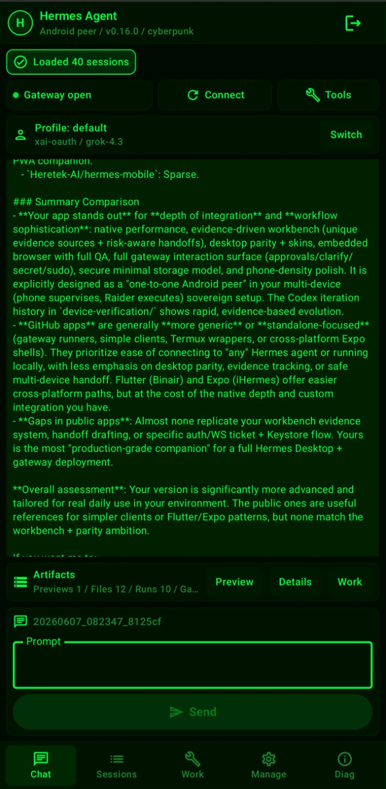
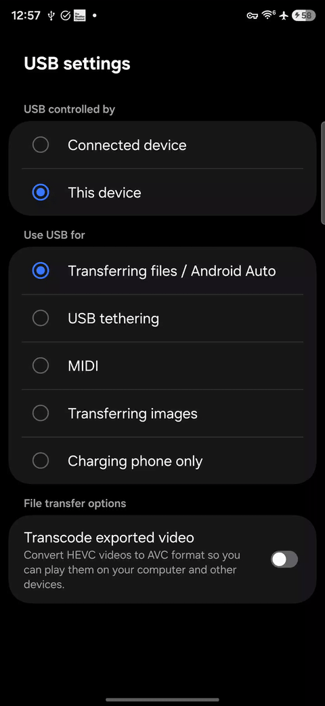

Hermes Agent Mobile Companion — Proof I can build around real agent infrastructure
Phone-first Android control surface for a Hermes Agent desktop/gateway setup.
I did not create Hermes Agent. Hermes Agent is the upstream agent/gateway/tooling layer. My work builds a mobile companion/control surface around daily operation: sessions, tools, artifacts, gateway state, approvals, profiles, and handoff back to the desktop.


What it proves
Android/mobile product execution, agent workflow design, gateway supervision, tool/action UX, artifact review, local-first thinking, and building useful surfaces around an existing agent platform instead of treating agents as chat boxes.
Failure mode
The phone should supervise and approve; the desktop/gateway should execute. High-risk actions must expose state, intent, artifacts, and recovery paths before execution.